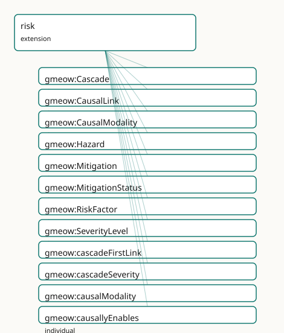

GMEOW Risk Module
- IRI: https://blackcatinformatics.ca/gmeow/slices/risk
- Tier: extension
Group: extensions
What This Slice Covers
This slice owns 38 terms and contributes 0 mapping or projection rows. Use it when its terms match the native fact you want to preserve; use the linkage tables to see how those facts leave GMEOW for consumer vocabularies.
Dependencies
Consumers
- The lbox principia importer (EPIC: failure_cascades — Trust Collapse and five siblings as named, graded, type-level chains) and threat-model worked examples (D3FEND countermeasures ↔
Mitigation; bowtie barriers ↔mitigationCounterson CausalLinks). The norms and procedures extensions plug in throughMitigation's deliberately open measure range — no extension→extension dependency exists or may exist (P16 DAG rule).
Local Map

Examples
Trust Collapse
- Source:
slices/extensions/risk/examples/trust-collapse.ttl - GMEOW terms:
gmeow:Cascade,gmeow:CausalLink,gmeow:EventType,gmeow:Hazard,gmeow:Mitigation,gmeow:SocialObject,gmeow:cascadeFirstLink,gmeow:cascadeSeverity,gmeow:causalModality,gmeow:causallyNecessitates
# SPDX-FileCopyrightText: 2026 Blackcat Informatics® Inc. <paudley@blackcatinformatics.ca>
# SPDX-License-Identifier: CC-BY-4.0
# Worked example (, the named P15 consumer's flagship case): the
# principia "Trust Collapse" failure cascade as a named, graded, type-level
# chain — betrayal dissolves the bond, bond dissolution kills the will to
# survive. NOTHING HERE OCCURRED: every node is an EventType, and the
# no-occurrence gate keeps it that way. A norm-shaped mitigation (the oath)
# bars the first link's antecedent by open-range reference.
@prefix gmeow: <https://blackcatinformatics.ca/gmeow/> .
@prefix ex: <https://blackcatinformatics.ca/gmeow/examples/> .
@prefix rdfs: <http://www.w3.org/2000/01/rdf-schema#> .
# The three feared kinds — types, never instances.
ex:etBetrayal a gmeow:EventType ; rdfs:label "trust betrayal (Shattered Oath)"@en .
ex:etBondDissolution a gmeow:EventType ; rdfs:label "bond dissolution (Severed Thread)"@en .
ex:etWillCollapse a gmeow:EventType ; rdfs:label "loss of the will to survive (Quiet Surrender)"@en .
# Flat 80% claims.
ex:etBetrayal gmeow:typeCauses ex:etBondDissolution .
# Reified where modality and mechanism matter.
ex:linkBetrayalToDissolution a gmeow:CausalLink ;
gmeow:linkAntecedent ex:etBetrayal ;
gmeow:linkConsequent ex:etBondDissolution ;
gmeow:causalModality gmeow:causallyNecessitates ;
gmeow:linkMechanism "The bond is constituted by the oath; betrayal does not damage it, it unmakes it."@en ;
gmeow:linkNext ex:linkDissolutionToCollapse .
ex:linkDissolutionToCollapse a gmeow:CausalLink ;
gmeow:linkAntecedent ex:etBondDissolution ;
gmeow:linkConsequent ex:etWillCollapse ;
gmeow:causalModality gmeow:causallyPromotes .
ex:trustCollapse a gmeow:Cascade ;
rdfs:label "Trust Collapse"@en ;
gmeow:cascadeFirstLink ex:linkBetrayalToDissolution ;
gmeow:cascadeSeverity gmeow:severityCatastrophic .
# The hazard at the source, and the norm-shaped barrier on the first link.
ex:duoBond a gmeow:SocialObject ; rdfs:label "the bonded partnership"@en .
ex:betrayalHazard a gmeow:Hazard ;
rdfs:label "betrayal exposure"@en ;
gmeow:hazardBearer ex:duoBond ;
gmeow:manifestedAsType ex:etBetrayal ;
gmeow:hazardSeverity gmeow:severityCatastrophic .
# Open-range measure: the oath norm (norms extension) plugs in with no
# extension→extension axiom — the IRI is reference, not dependency.
ex:oathMitigation a gmeow:Mitigation ;
gmeow:mitigationMeasure ex:oathNorm ;
gmeow:mitigationCounters ex:linkBetrayalToDissolution , ex:betrayalHazard ;
gmeow:mitigationStatus gmeow:mitigationActive .
Terms
Classes
| Term | Label | Definition |
|---|---|---|
gmeow:Cascade |
Cascade | A NAMED chain of causal links — 'Trust Collapse: betrayal dissolves the bond, bond dissolution kills the will to survive.' A social object: the cascade exists... |
gmeow:CausalLink |
Causal Link | A reified type-level causal claim — antecedent kind × consequent kind × modality, with optional mechanism prose and solver-input strength. Mint one when HOW th... |
gmeow:CausalModality |
Causal Modality | The force of a causal link — an OPEN value vocabulary seeded with necessitates (the antecedent suffices), promotes (raises likelihood), enables (makes possible... |
gmeow:Hazard |
Hazard | A bearer's disposition toward harm — manifested, when it manifests at all, as events of a feared type (gmeow:manifestedAsType). A hazard that never manifests i... |
gmeow:Mitigation |
Mitigation | A reified countermeasure binding: a measure — a gmeow:Norm (norms extension) or a Procedure (procedures extension) — set against a causal link or hazard it cou... |
gmeow:MitigationStatus |
Mitigation Status | The lifecycle status of a mitigation — an OPEN value vocabulary seeded with proposed, active, retired. Retirement is suppression-shaped: a retired mitigation i... |
gmeow:RiskFactor |
Risk Factor | The umbrella category of things a mitigation can be set against — causal links (a bowtie barrier on the chain) and hazards (a control at the source). Exists as... |
gmeow:SeverityLevel |
Severity Level | The graded severity of a cascade or hazard — an OPEN, ordered value vocabulary (catastrophic ≻ severe ≻ moderate ≻ minor; deployments add grades — negligible,... |
Properties
| Term | Label | Definition |
|---|---|---|
gmeow:cascadeFirstLink |
cascade first link | The entry link of this cascade. Functional and mandatory (SHACL). |
gmeow:cascadeSeverity |
cascade severity | The cascade's graded severity — according to whoever grades it (statement-layer indexed). NOT functional (review): grading is evaluative and source-var... |
gmeow:causalModality |
causal modality | The force this link claims. Functional and mandatory (SHACL): if you reified, you had a reason — the modality is it. Open vocabulary (sh:nodeKind sh:IRI, never... |
gmeow:hazardBearer |
hazard bearer | The entity in which this hazard inheres. Functional and mandatory (SHACL): a disposition has exactly one bearer (gUFO inherence, asserted with GMEOW's own prop... |
gmeow:hazardSeverity |
hazard severity | The hazard's graded severity, when graded standalone (a hazard feeding a cascade usually inherits attention from the cascade's grade). NOT functional (... |
gmeow:linkAntecedent |
link antecedent | The causing kind. Functional and mandatory (SHACL); distinct from the consequent (SHACL — nothing type-causes itself). |
gmeow:linkConsequent |
link consequent | The caused kind. Functional and mandatory (SHACL). |
gmeow:linkMechanism |
link mechanism | How the causation works — prose. NOT functional and range-open (localizable prose, the lesson): one mechanism account per language tag. |
gmeow:linkNext |
link next | The next link in a cascade walk. NOT functional (a link may feed branches; a branching failure tree is one cascade entry with diverging walks) and NOT transiti... |
gmeow:linkStrength |
link strength | A solver-INPUT weight for this link, on whatever scale the consuming analysis declares. Never a solver output written back as assertion (Principle 12). NOT fun... |
gmeow:manifestedAsType |
manifested as type | The feared kind of event — what this hazard's manifestation would BE, were it to occur. Range is gmeow:EventType, never gmeow:Event: the type level is where co... |
gmeow:mitigationCounters |
mitigation counters | What the measure is set against — a gmeow:RiskFactor: a CausalLink (a bowtie barrier on the chain) or a Hazard (a control at the source). NOT functional, at le... |
gmeow:mitigationMeasure |
mitigation measure | The countermeasure — a norm that forbids the antecedent conduct, a procedure that interrupts the chain, a design control. Range intentionally open across exten... |
gmeow:mitigationStatus |
mitigation status | The mitigation's lifecycle status. NOT functional (review): lifecycle is mutable and source-variable — status-over-time rides validFrom/validUntil on t... |
gmeow:moreSevereThan |
more severe than | Orders severity levels. Transitive ON LEVELS ONLY (the gmeow:coarserThan / gmeow:strongerThan pattern) — cascades themselves are never ordered transitively. |
gmeow:typeCauses |
type causes | Flat type-level causal claim: events of the subject kind bring about events of the object kind — according to whoever asserts it (statement-layer indexed, Prin... |
gmeow:typeEnables |
type enables | Flat type-level enablement: events of the subject kind make events of the object kind possible without bringing them about. NOT transitive; promote to gmeow:Ca... |
gmeow:typeMitigates |
type mitigates | Flat type-level mitigation: events of the subject kind reduce the severity or likelihood of events of the object kind without fully preventing them. NOT transi... |
gmeow:typePrevents |
type prevents | Flat type-level prevention: events of the subject kind block events of the object kind. NOT transitive. Grounds sumo:prevents at alignment time; the D3FEND cou... |
Individuals
| Term | Label | Definition |
|---|---|---|
gmeow:causallyEnables |
enables | The antecedent kind makes the consequent kind possible. |
gmeow:causallyNecessitates |
necessitates | The antecedent kind suffices for the consequent kind. |
gmeow:causallyPrevents |
prevents | The antecedent kind blocks the consequent kind — the inhibitory reading, reified. |
gmeow:causallyPromotes |
promotes | The antecedent kind raises the likelihood of the consequent kind. |
gmeow:mitigationActive |
active | The mitigation is in force. |
gmeow:mitigationProposed |
proposed | The mitigation is proposed, not yet in force. |
gmeow:mitigationRetired |
retired | The mitigation has been withdrawn — kept with this status, never deleted (Principle 10). |
gmeow:severityCatastrophic |
catastrophic | The catastrophic severity level — the failure that ends the system it grades. |
gmeow:severityMinor |
minor | The minor severity level. |
gmeow:severityModerate |
moderate | The moderate severity level. |
gmeow:severitySevere |
severe | The severe severity level. |
Guide
risk
Slice:
https://blackcatinformatics.ca/gmeow/slices/risk· tier: extension
Hazards, type-level causation, cascades, and mitigations (EPIC) — counterfactual causal structure without counterfactual machinery.
The type-level move
Cascades relate event types, never event instances: nothing in this
slice asserts that anything occurred, and the no-occurrence gate makes that
executable (the test suite asserts the full fixture set entails zero
gmeow:Event instances from this slice's terms). PROV lineage and CRM
influence are token-level; OBO RO is the rare type-level causation
vocabulary — that asymmetry is why this slice exists.
Shape of the model
Hazard⊑gufo:Disposition(first Disposition use in GMEOW): a bearer's disposition toward harm,manifestedAsType→ the fearedEventType(s). A hazard that never manifests is fully real.- Flat type-level links
typeCauses/typeEnables/typePrevents/typeMitigates(EventType→EventType, never transitive — chain composition is solver work, P12) → promote toCausalLink(antecedent × consequent × mandatorycausalModality[necessitates / promotes / enables / prevents, open] × localizable mechanism prose × solver-inputlinkStrength). Causal links are claims: standpoint-indexed, confidence-bearing; two analysts' divergent links coexist (P9). Cascade⊑SocialObject— a named failure narrative ("Trust Collapse"), entered atcascadeFirstLink, walked bylinkNext(non-functional → branching failure trees; SHACL-acyclic), graded by the orderedSeverityLevelvocabulary (GranularityLevelpattern, fourth use; ISO 31000 / IEC 60812 anchor terminology only).Mitigationbinds a measure to aRiskFactor(the named umbrella overCausalLink+Hazard— generator-visible range, relator-arity visible end). The measure range is deliberately open (thetenurePositionprecedent, fourth use): agmeow:Normor aProcedureplugs in without extension→extension dependency (P16). Whether a mitigation worked is a vantage-indexed claim, never an entailment.
Deferred to the compiler-arc window
OBO RO rows (linkage-only, BFO lineage), MITRE D3FEND
(countermeasure ↔ Mitigation), STIX 2.1/ATT&CK, UCO, ConceptNet/ATOMIC;
projections to bowtie JSON (near-structural; drops causalModality — declared),
FMEA CSV (drops chain order — declared), STIX bundles. Target list fixed in.